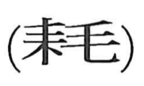

耗

Kun: | On: kou, mou
to decrease ・ to wear out ・ to consume ・ attrition
Explanation
A phono-semantic compound: 耒, the plow, supplies the field-and-cultivation sense, while 毛 serves as the phonetic, yielding the on-yomi mō (kō is also attested). Early usage evokes the ruin of farmland, as in the Book of Odes (Major Odes, Yun Han): 耕斁下土, portraying the land laid waste; hence expressions like 耗土 for devastated, impoverished ground. From this image the character broadened to mean attrition and depletion—being used up, worn down, or exhausted—seen in compounds such as 耗尽, 耗損, and 消耗, with mō the on-yomi in general use.